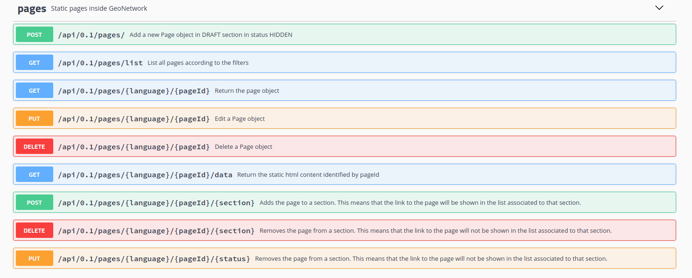

This feature allows to store the HTML content for static pages and show the links to these pages in specific sections of the user interface:
The HTML content is stored in a new table of the GN’s database.
The link to pages can be showed in different points of the GN’s GUI according to a list of “sections” associated to each page. In this PR is introduced the support to show the links for the top toolbar and the footer.
Each page can be in 3 states:
HIDDEN: visible to administrator.
PRIVATE: visible to logged users.
PUBLIC: visible to everyone.
Pages can be added to different page sections. Currently the sections implemented are TOP (top menu of the main page) and FOOTER (footer of the main page).
Only the administrator can edit the pages and see the pages in HIDDEN status.
The creation and the management of the content is done via the API.

Some restrictions:
It is not possible to apply custom CSS to the page.
Before executing the following examples, see Example of CSRF call using curl for details on the usage of the CSRF token (instead of the value "X-XSRF-TOKEN:e934f557-17a3-47f2-8e6b-bdf1a3c90a97" used in the examples) and cookies in the requests.
At this point the page is created but not visible because is in status HIDDEN and is not loaded explicitly in any section of the page, except DRAFT that is not visible (in the future could be added to a page with an editor interface). Similar requests should be done for each UI language supported.
To associate the link to the top bar is necessary to use the method POST /api/pages/{language}/{pageId}/{section} with the TOP value for the section.
To associate the link to the footer is necessary to use the method POST /api/pages/{language}/{pageId}/{section} with the FOOTER value for the section.